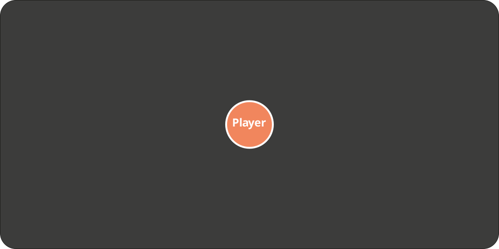
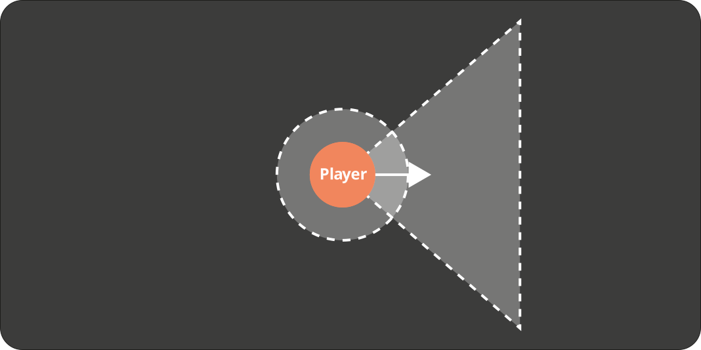
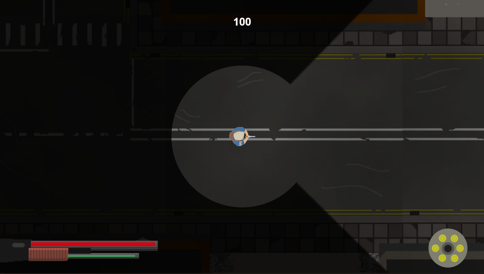

Directional Fog of War
Pour SwarmZ, j'ai développé un système de brouillard de guerre directionnel à l'aide du composant Drawing Canvas de Construct 3.
Fog Rendering
À chaque frame, le brouillard est redessiné sous la forme d'un voile noir semi-opaque. Les zones visibles sont ensuite découpées à l'aide de deux formes : une zone circulaire autour du joueur et un cône orienté dans la direction de son regard.
Ces découpes utilisent le mode de fusion Destination Out, qui permet de retirer les parties correspondantes du brouillard. Le résultat est ensuite superposé au gameplay.



Enemy Visibility
L'affichage des ennemis est géré séparément à l'aide de deux comportements Line of Sight : l'un à courte portée autour du joueur, et l'autre à plus longue portée, correspondant au cône de vision directionnel. Lorsqu'un ennemi est détecté par l'un de ces champs de vision, il devient visible. Dans le cas contraire, il reste masqué.
Ennemi visible Ennemi masqué
Cette démonstration est une représentation simplifiée des zones de détection, et non une reproduction du rendu interne de Construct 3.
Inspiration : Project Zomboid ↗ Une inspiration de game design, pas une reproduction de son implémentation.